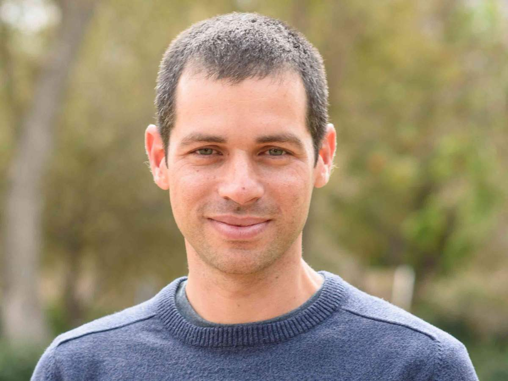
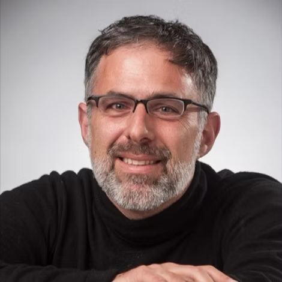

Prof. Ofer Firstenberg
Weizmann Institute
Focus areas:
- Neutral and Rydberg atoms
- Quantum Memory
- Atom-Light interactions
Joab Rosenberg
Founder and General Partner of a Quantum dedicated venture fund
- Unique access to the Quantum Technologies talent pool
- Over a decade of teaching Physics and Philosophy in various universities in Israel and abroad
- Currently working at Prof. Firstenberg's lab in Weizmann
- Specialized in teaching quantum mechanics to non-physicists
- Ran the first full 4-weeks quantum bootcamp in March 2025 for 20 experienced high tech employees